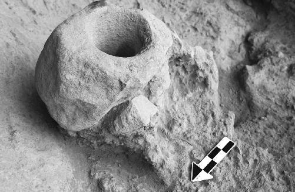
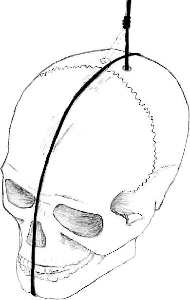
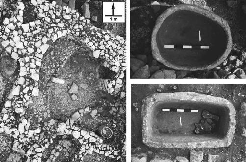
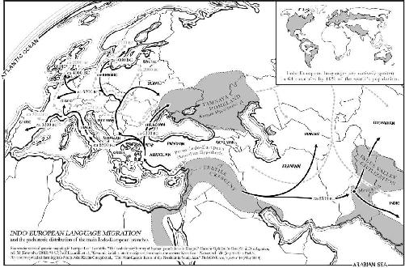
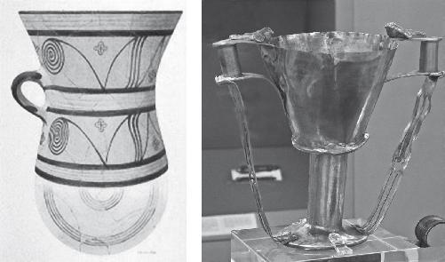

As I pull up to the oldest working brewery in the world, the bearded giant is waiting for me in the gray Bavarian drizzle. Dr. Martin Zarnkow is head of research and development at the Weihenstephan Research Center for Brewing and Food Quality at the Technische Universität München. His laboratory marks the nexus of the beer universe here in Freising, Germany, only minutes from the Munich International Airport. In operation since AD 1040, prior to the Crusades, the first kegs that came out of this former monastery were cooked up by the Benedictines. And right here on Weihenstephan’s doorstep in 1516, Duke Wilhelm IV of Bavaria issued the Purity Law that forever memorialized beer’s three principal ingredients: barley, water, and hops.1 Anything else, and it couldn’t be called “beer,” a complicated beverage with a complicated past going all the way back to the Stone Age. In fact the initial results of some recent archaeobotanical and archaeochemical finds point to a prehistoric connection between religion and psychoactive brews as the real driving force behind modern civilization. Once the domain of mere speculation among scholars like Walter Burkert and others, there is now hard evidence for rituals of intoxication preceding Eleusis by many thousands of years. Rituals complete with a sacrament much like the kukeon.
Few can tell the story quite like Zarnkow, the world’s preeminent beer scientist. I’ve caught him on a cold Friday afternoon in November 2018, in between trips to Turkey, India, and Brazil, where the master brewer is wildly sought after to teach the high-tech methods he has brought to the original Bavarian art. Whether it’s culturing the perfect brewer’s yeast or developing a gluten-free beer, Zarnkow is the fixer. And he also happens to be an incredible historian. Once we escape the rain and settle into his relaxing, spacious office, the proud German directs me straight to the overflowing bookshelves lining the back wall. I spot an entire section dedicated to the early editions of some antique gems: Johann Coler’s Oeconomia Ruralis Et Domestica (1645), Wolf Helmhardt von Hohberg’s Georgica Curiosa (1687), the Monumenta Boica (1767).
In a navy blue button-down shirt and olive pants, the hefty scientist sinks into his ergonomic chair and folds his arms over his chest. We’ve exchanged a few emails, so he knows I’m interested in the origins of the beverage that consumes his life. But he’s unsure why I’ve flown all the way to Munich just to speak with him. So he begins with a question.
“What is in your mind if you think about the brewing process?”
“I don’t know.” I hesitate, sensing I’m being set up. I flash to my refrigerator in Washington, D.C., stocked with a dozen IPAs from local breweries: Nanticoke Nectar, Double Duckpin, Surrender Dorothy. My favorite, Nimble Giant, has a cartoon hop drawn on the sixteen-ounce can. “I envision big copper vats of liquid. I think about malting and mashing and fermenting. I think about heat.”
“Yes, that’s what most people are thinking about. But that’s modern. That’s only since medieval times, when we started to brew beer—to boil beer,” the expert begins, offering a quick tutorial on ancient brewing. He launches headfirst into the prehistory of the golden elixir occupying brightly colored bottles placed all around his office. And he stakes out a clear position on the long-running beer vs. bread debate that has been circling in the archaeological community for over six decades. Which one deserves the title of humanity’s oldest biotechnology?
In 1953, J. D. Sauer from the University of Wisconsin’s Department of Botany proposed the only sensible answer: beer. Unlike his colleague and leading scholar of Middle East prehistory, Robert Braidwood of the University of Chicago, Sauer believed that the Natufians—who lived in what is now Syria, Israel, and Jordan from about 13,000 to 9500 BC—brewed a primitive beer before they ever baked the first loaf of bread. The then recently unearthed sickles, mortars, and pestles had to be evidence of the Natufians’ beer-making abilities.2 Contrary to the prevailing view at the time, it was not man who domesticated wild grain, but the other way around. And according to Sauer, the first farmers did not lure the passing hunters and gatherers into their risky agricultural endeavor with a dry piece of stale bread. It must have been a mind-altering potion.
Zarnkow agrees, explaining why brewing is so much easier than baking. Turning unprocessed grain into bread takes a little bit of work. First, the grain has to be crushed in order to produce enough dough. Second, its hard protective coating has to be removed, because the kernels won’t naturally break free of their casings during the harvest. And third, baking demands high temperatures. “That is one of the major mistakes people are making if they think about former beer-making. It doesn’t necessarily have anything to do with heat. Just take the cereal and put it in water. That’s it.”
“And that will ferment?”
“Yes, the yeast is coming from your hand,” replies the brewer.
“And there’s really enough to kick-start the fermentation process?”
“Yeah, you have enough. If the yeast is active and vital enough, then fermentation will start. Because our body has an entire microbiome on the skin.”
The beer vs. bread debate is highly charged, because it has implications for the very foundations of the world today. If beer really is the oldest biotechnology, it could very well be responsible for what archaeologists call “one of the most significant turning points in the history of mankind.”3 That sudden shift from hunting and gathering to a sedentary, community-based lifestyle known as the Neolithic or Agricultural Revolution.
We know the movement to domesticate our plants and animals began in the vicinity of the Fertile Crescent, sometime around 10,200 BC, as the Old Stone Age (Paleolithic) gave way to the New Stone Age (Neolithic). But we don’t know why it happened. The transition to farming may have allowed us to pool knowledge and resources, leading the human family into the great urban civilizations that have flourished ever since, but it wasn’t without some serious flaws. As the diet became less diverse and balanced, reduced to just “a few starchy crops,” our overall health deteriorated. We grew noticeably shorter. And because of the crowded, unsanitary conditions that brought the former foragers into extended contact with each other and their filthy animals for the first time, parasites and infectious disease ran amok. Which is why historian Jared Diamond has referred to the Agricultural Revolution as “the worst mistake in the history of the human race.”4 For the tens of thousands of years of the Upper Paleolithic preceding it, we were tall, resilient, happy, and healthy. Why give that up?
For a steady supply of beer, of course. As Zarnkow has just argued, all you had to do was rip the crop out of the ground and steep it in some water. No crushing, no de-husking, no heat. If the brewing of beer really preceded the baking of bread, then the mysterious origins of the poorly understood Agricultural Revolution would be rewritten as the Beer Revolution. And for purposes of this investigation, it would finally put a barley-based potion like the kukeon in proper context. If prehistoric humans were drinking beer over twelve thousand years ago, then altered states of consciousness have played a much bigger role in the development of our species than previously acknowledged. And the beer of yesterday, we need to realize, was very different from the beer of today. Whatever made us abandon the caves for the cities would almost certainly have carried religious meaning, promoting beer from an everyday beverage to a sacrament. A sacrament that, by the time it got to Eleusis as a minty beer around 1500 BC, would have had an astoundingly long history behind it. Longer than ever thought possible.
The debate continues, but at least one reason why Zarnkow sides with Sauer over Braidwood is the recent scholarship of Brian Hayden, professor emeritus at Simon Fraser University.5 In a twenty-first-century spin on Sauer’s reasoning, Hayden highlights the “unusual efforts” expended by the Natufians to cultivate wild grains like einkorn and emmer wheat, some of the earliest domesticated crops in the Near East. Paleobotanical samples have been recovered from several Natufian sites that were located a good distance from the original source of the grains—in some cases, up to a hundred kilometers.6 So the plants evidently held some kind of special value. According to Hayden’s “feasting model,” as the earliest agrarian settlements grew and competed for the manual labor needed to sustain them, whoever threw the best keg parties stood to gain a loyal following. Those who drink together, stick together. But not all prehistoric drinking was a recreational event.
Recently a team of researchers led by Stanford University lent some hard data to Sauer and Hayden’s favorite theory. But in the process, they may have also unearthed the mysterious reason why our ancestors converted to the religion of brewing in the first place. As described in “Fermented beverage and food storage in 13,000 y-old stone mortars at Raqefet Cave, Israel: Investigating Natufian ritual feasting,” published in the Journal of Archaeological Science in October 2018, archaeologist Li Liu examined three limestone mortars from a Natufian burial chamber in modern-day Mt. Carmel, just outside Haifa, Israel. Between 11,700 and 9700 BC, about thirty individuals were interred in the Raqefet Cave. The site features “clear indications” of ritual activity, complete with flower-lined graves and animal bones consumed during “funerary feasts.”7
After collecting and analyzing the botanical residue from the mortars, Liu and her team identified a number of plants, including wild wheat and/or barley (Triticeae), oats (Avena spp.), sedge (Cyperus sp.), lily (Lilium sp.), flax (Linum usitatissimum), and various legumes. Some of the microremains were found to “exhibit distinctive damage features typical of malting,” when the raw grain receives enough moisture to germinate, producing the enzymes needed for the brewing process. Others appeared hollowed out and swollen, telltale signs of “gelatinization due to mashing,” when the starch chains in the malt are broken down and the fermentable sugars released. For the Stanford team, the results are conclusive evidence that the stone mortars were used for brewing beer, “the earliest known experiment in making fermented beverages in the world.”8

Field photo of a 13,000-year-old boulder mortar, apparently used to brew prehistoric beer at the Natufian burial site within the Raqefet Cave in Israel. Dror Maayan. Courtesy of Dani Nadel, Zinman Institute of Archaeology, University of Haifa, Israel
But at the Raqefet Cave this Stone Age brew was a craft recipe, “probably with legumes and other plants as additive ingredients.” And instead of being passed around during a Natufian happy hour, the potion appears to have been something of a sacrament. Interestingly Liu says that the Natufians consciously incorporated this graveyard beer into their “mortuary rituals to venerate the dead,” demonstrating “the emotional ties the hunter-gatherers had with their ancestors.”9
Zarnkow hands me a hard copy of Liu’s paper. He was reading it before I arrived. He notes the critical, missing piece of data. Evidence of malting and mashing is not necessarily evidence of fermentation. For that there are certain chemical signatures outside the paleobotanists’ wheelhouse that are better detected by archaeological chemists. The primary indication of beer fermentation is a tough precipitate known as calcium oxalate, or beerstone. In modern brewing the residue is mainly just a headache, requiring intensive cleaning of aging tanks. But for an archaeological sleuth like Zarnkow, finding beerstone on sufficiently ancient brewing equipment could be the smoking gun that finally vindicates Sauer, proving that beer really is the oldest biotechnology in the world. And if calcium oxalate were discovered in a deeply spiritual setting like the Raqefet Cave, it would also establish a sacramental link, however delicate, between prehistoric beer and the psychoactive kukeon at Eleusis.
That’s exactly what’s happening at the site now famously referred to by the Smithsonian as “the world’s first temple.”10 And Zarnkow is smack in the middle of a colossal mystery that is baffling archaeologists and historians the world over. Of all the extraordinary things about Göbekli Tepe in southeastern Turkey, the most extraordinary is the fact that it even exists. Nestled discreetly by the Syrian border, the massive stone sanctuary is just not supposed to be there. Rediscovered by the late Klaus Schmidt of the German Archaeological Institute in 1994, the temple has been confidently dated to the end of the last Ice Age—a stunning twelve thousand years ago, contemporaneous with the Natufians. But dozens of T-shaped pillars were erected at Göbekli Tepe, unlike the prehistoric sites in Israel. It is the earliest megalithic architecture in the world.
Some of the pillars weigh fifty tons and rise more than twenty feet in the air. They are arranged in circles referred to as “enclosures,” with two central monoliths surrounded by rings of equally gigantic, freestanding limestone. While four such enclosures have been excavated to date, geophysical surveys have confirmed at least another sixteen still hidden underfoot. The main T-shaped pillars have been described by the current archaeological team as “positively human-like,” with the T’s representing shoulders or heads.11 In low relief, spindly arms wrap around the sides of the stones; human hands with tapering fingers meet on the front, frozen above decorative belts. Schmidt once called them “very powerful beings,” possibly ancestors or deities: “if gods existed in the minds of early Neolithic people, there is an overwhelming probability that the T-shape is the first known monumental depiction of gods.”12
Sometime after 8000 BC, the entire complex was backfilled with gravel, flint tools, and bones—a prehistoric message in a bottle—which is why the site and its intricately carved pillars were so flawlessly preserved. And why Göbekli Tepe is now challenging all our assumptions about the hunters and gatherers who spearheaded the Agricultural Revolution, once thought incapable of such incredible feats of engineering. To put Göbekli Tepe in context, its megaliths predate Stonehenge by at least six thousand years. They predate the first literate civilizations of Egypt, Sumer, India, and Crete by even more. Unearthing this kind of Stone Age sophistication so deep in our past is like finding out your great-grandparents have been secretly coding apps and trading cryptocurrency behind everyone’s back.
This once-in-a-century dig has turned the world of archaeology on its head. It was once thought that farming preceded the city, which in turn preceded the temple. God was supposed to come last, once our archaic ancestors had enough time on their hands to contemplate such impractical things. Schmidt’s “cathedral on a hill,” however, demonstrates the exact opposite.13 Religion wasn’t a by-product of civilization. It was the engine. And because of its location in that region of Upper Mesopotamia known as the “cradle of agriculture,” Göbekli Tepe emerges as the catalyst of both farming and urbanization, the very things that drive the world today.14 Oddly, the holy place shows no signs of permanent settlement itself. It was a pilgrimage destination. So if the architects of the temple didn’t come to put down roots, why did they invest all their time and energy into the construction of this immense twenty-two-acre site in the first place? And why come back, on a seasonal basis, over the course of the sixteen hundred years that Göbekli Tepe was in use during the tenth and ninth millennia BC?
Like the Raqefet Cave, it has something to do with the afterlife. For his part Schmidt believed Göbekli Tepe was a sacred burial ground for a lost society of hunters—“the center of a death cult.” The location, which means “Potbelly Hill” in Turkish and soars fifty feet above its environs, may have been consciously chosen. “From here the dead are looking out at the ideal view,” Schmidt once remarked. “They’re looking out over a hunter’s dream.”15 In addition to the humanoid ancestors or gods, the pillars of the enclosures are carved with an array of realistic images in both high and low relief: foxes, boars, aurochs, snakes, scorpions, and hyenas. There are vultures, human heads, and decapitated bodies as well. It’s the kind of iconography that is elsewhere associated with the de-fleshing of corpses and other bizarre burial rites from the Neolithic period.
At Göbekli Tepe the archaeological team sees unique evidence of a “skull cult”: human crania with “repeated and substantial cutting” performed just after death. One such skull had a hole drilled into its left parietal bone, “the position of which was carefully chosen so that the skull might hang vertically and face forward when suspended.”16 The incised grooves may have prevented the cord that stabilized the skull from slipping, suggesting its use as an icon in what the team refers to as “ancestor veneration.” And in keeping with the graveyard beer at the Raqefet Cave, “the world’s first temple” may have also been the world’s first bar.

Reconstruction of how the skulls at Göbekli Tepe may have been displayed for ritual use. A cord would be inserted into the hole drilled into the top of the cranium, and then wrapped lengthwise around the skull along grooves of chiseled bone to stabilize the religious artifact.
Courtesy of Juliane Haelm (© Deutsches Archäologisches Institut, DAI)

Two of the six limestone basins excavated from the archaeological site at Göbekli Tepe in Turkey. Vessels like this barrel (upper right) and trough (lower right) could have once accommodated up to 42 gallons of prehistoric beer. K. Schmidt, N. Becker. Courtesy of Jens Notroff (© Deutsches Archäologisches Institut, DAI)
In “The role of cult and feasting in the emergence of Neolithic communities. New evidence from Göbekli Tepe, south-eastern Turkey,” published in the journal Antiquity in 2012, Zarnkow and the team from the German Archaeological Institute unveiled the results of their chemical analysis on the “grayish-black residues” found in six enormous limestone basins scattered throughout the site. Some are rounded like barrels, others more square like troughs. Dating to the ninth millennium and considered “static, integral parts of particular rooms,” the barrels and troughs could accommodate forty-two gallons of liquid. Fragments of similar vessels have been found in all strata of Göbekli Tepe, testifying to their broad use in “large-scale feasting” with a “strong cultic significance.”17
The archaeological team notes the “surprisingly large amount of animal bones” used to backfill the site, as well as the abundant grinders, mortars, and pestles dedicated to plant processing. Echoing Hayden’s “feasting model,” the excavators envision the sanctuary hosting “collective work events,” complete with ritual dancing that might induce an “altered state of consciousness.” And, of course, a graveyard beer to match the potion at the Raqefet Cave, perhaps allowing “ecstatic” communion with the ancestors.18 Was Göbekli Tepe the scene of a drunken, skull-worshipping funeral feast? Was the whole point of humanity’s first ritual beverage to facilitate what Julia Gresky of the German Archaeological Institute refers to as “the interaction of the living with the dead”?19
“I would say it’s inconclusive,” Zarnkow tells me, alluding to the promising but mixed results of his laboratory analysis. Using what’s known as a Feigl spot test, the beer scientist added a drop of chemical reagent to various samples taken by the field team at Göbekli Tepe. When calcium oxalate is present, the residue changes color. In the first round, none of the samples tested positive. In the second, there was one signal indicating beerstone, followed by another two signals in the third round. “That’s why we want to go there again,” continues Zarnkow. Next time he wants to retrieve the residue for himself, just to be sure of no contamination within the limestone barrels and troughs. “You need really sterile conditions—absolutely sterile—when you take these samples. And this is ten thousand years ago! So it’s really not that easy. But we just have to repeat the tests.”
In the meantime the early results from the Raqefet Cave and Göbekli Tepe have introduced some state-of-the-art science to the beer versus bread debate. If further chemical analysis confirms the fermentation of beer in the Fertile Crescent, then it means the Agricultural Revolution was, in fact, the Beer Revolution. And civilization itself may have begun with a ritual potion. A sacrament fit for the first community-wide celebrations of the dead. Its intoxicating effects could have created a sense of cohesion among the living while establishing a mind-altering link to their ancestors. With a spiritual devotion to the grain, a shared notion of pilgrimage, and an apparent obsession with the afterlife, this prehistoric tradition from Anatolia in modern-day Turkey could very well have laid the groundwork for Eleusis, just west across the Aegean Sea. If this religion with no name really was the Stone Age inspiration for the Ancient Mysteries, it certainly wouldn’t have had to travel very far.
All this raises the fascinating possibility that the graveyard beer of the Raqefet Cave and Göbekli Tepe was some kind of Stone Age precursor to the barley-based kukeon. Before the rediscovery by Klaus Schmidt, was Göbekli Tepe and its otherworldly ceremonies what Walter Burkert had in mind as the “prehistoric drug rituals” at the basis of Eleusis? Was this the “festival of immortality which, through the expansion of consciousness, seemed to guarantee some psychedelic Beyond”? If so, that leaves us with two burning questions: how did it survive thousands of years—in the total absence of the written word—from Neolithic Anatolia to Ancient Greece? And more important, where are the drugs?
Thanks to recent DNA analysis, an international team from the University of Washington, Harvard Medical School, and the Max Planck Institute for the Science of Human History may have actually answered the first question. The Stone Age inhabitants of Turkey did not just influence the Stone Age inhabitants of Greece. They became the Greeks. And the DNA evidence that now shows the biological relationship between the two people also suggests why the Anatolians were so popular with their immediate neighbors to the west. The age of the DNA signal happens to coincide with the very moment when the descendants of the first farmers in the Fertile Crescent started taking the family business overseas—not just into Greece, but into all of Europe.
It brings us right back to those mysterious Proto-Indo-Europeans I was discussing with Director Adam-Veleni in Athens. As we saw in chapter 3, Harvard’s Calvert Watkins traced the striking similarities between the Eleusinian and Vedic rituals to a Proto-Indo-European source, all convincingly argued in his 1978 paper “Let Us Now Praise Famous Grains.” If anybody was going to smuggle drugs into Europe, it was the Proto-Indo-Europeans who exported the soma to India—that Vedic elixir explicitly characterized by Watkins as “hallucinogenic.” For some reason Western scholars are not so scandalized by the prospect of ancient Indians doing drugs. The eastern branch of our Indo-European family seems exotic and far-off, unconnected to our Greek foundations. But dig deeper, and the issue remains: where did soma come from? Why would the original sacrament of Western civilization make the long journey to the Himalayas, but somehow get lost en route to Eleusis? If half of the Proto-Indo-European tradition went east into India, and the other half went west into Greece, then the common source of both could contain the answer to the whole psychedelic affair.

Everything hangs on the homeland.
Most linguists support the theory that places the genesis of the Proto-Indo-Europeans somewhere in the prehistoric steppes north of the Black and Caspian Seas, where southern Russia separates modern-day Ukraine and Kazakhstan. The nomadic tribe of pastoralists is thought to have broken away from this supposed homeland sometime after 4000 BC, very slowly sending waves of migrants east across Asia and west across Europe.20 Another school of thought has spent the past three decades collecting evidence for a competing homeland, and a much older date for the diaspora. As part of his Anatolian Hypothesis, first published in 1987, the respected archaeologist Colin Renfrew of Cambridge University tried to pinpoint the actual mechanism that would have allowed the earliest Indo-Europeans to replace existing languages so successfully over such a wide geographic area, from Iceland to Siberia to Sri Lanka.21 For Renfrew there had to be something in the earlier Neolithic period that sparked the initial, western spread of the richest family of languages in human history. There had to be a hook. His answer is what the British archaeologist terms “agricultural dispersal.”
As early as 7000 BC the Stone Age growers would have begun sharing their expertise outside the only logical Proto-Indo-European homeland, Anatolia, where the wild and domesticated plants first met in the cradle of agriculture surrounding Göbekli Tepe. Rather than violently invading the European continent, these earliest Indo-Europeans may have fanned out from the Fertile Crescent with valuable knowledge to share. The technology of farming could have prompted a smoother, more sustainable process of acculturation. Wherever that technology was adopted in each “new ecological niche,” according to the hypothesis, the mother tongue of Proto-Indo-European would have followed.22 Perhaps that’s how this extinct ur-language and its native death cult made the short hop over to the Lady of the Grain’s territory, far earlier than most linguists are willing to accept.23
Greece has long boasted “the earliest farming settlements” in Europe, dating to about 6500 BC. Beyond that, however, not much was known about its prehistoric farmers. Until the DNA evidence came through, with a shocking result. In “Genetic origins of the Minoans and Mycenaeans,” published in the prestigious journal Nature in 2017, an interdisciplinary team of thirty-four scientists and archaeologists across a range of specialties debuted the first genome-wide DNA sequence of Greece’s Bronze Age inhabitants. As the first literate Europeans, the earliest Minoans are typically dated to the third millennium BC. Before the Mycenaeans followed them onto mainland Greece, the archaic residents of Crete have always been regarded as the oldest ancestors of the Greeks and Europeans at large. As it turns out, they’re very old indeed. More than 75 percent of the DNA retrieved from nineteen ancient Minoan and Mycenaean specimens belonged to “the first Neolithic farmers” from Anatolia, who apparently began seeding Greece in the seventh millennium BC—four thousand years earlier than the traditional dating of the Minoans. The data matches Renfrew’s Anatolian Hypothesis with amazing accuracy.24 From their first stop in Greece, the Anatolians would then travel farther west. And by about 4000 BC, their DNA would be all over Europe.25
If the Proto-Indo-European homeland has been spotted at long last, then whatever sacrament came from Anatolia could be regarded as the likely source, however distant, for both the Greek kukeon and the Indian soma. Implausible as it seems, the Anatolian graveyard beer just might be the secret inspiration behind European civilization. If brewing was the cause of the Agricultural Revolution itself, then it also could have spawned the movement that forever replaced the hunters and gatherers of Europe with the city folk of today. It all happened between the seventh and fourth millennia BC. But why? In addition to the new technology of farming in general, maybe brewing was the specific mechanism by which the Proto-Indo-Europeans were able to entrance the entire European continent during the Neolithic period. As far as Ancient Greece is concerned, the latest archaeochemical evidence is crystal clear. Death cult potions were a bona fide reality. And they were being consumed in Greece exactly when the Mysteries landed in Eleusis.
I had a long, productive phone call with Patrick McGovern, the director of the Biomolecular Archaeology Project at the University of Pennsylvania. Perhaps the most famous archaeological chemist in the world, McGovern was the one who recommended I catch the plane to Munich in the first place. The affable, bearded scientist has certainly earned his reputation as the “Indiana Jones of Extreme Beverages” and the “Lazarus of Libations.” He still holds the record for the oldest undisputed identification of calcium oxalate.26 That find came in the early 1990s, from a wide-mouthed fifty-liter jug unearthed at the Neolithic site of Godin Tepe in Iran, an historically significant trading post with links to the west among the Mesopotamian city-states of the Tigris-Euphrates Valley. The beerstone dated to as early as 3500 BC. The equivalent chemical signature for wine fermentation is tartaric acid. In 2017 McGovern would spot the earliest Eurasian evidence for that compound in Georgia, from around 6000 BC.27 The chemistry doesn’t get us back to Göbekli Tepe just yet, but it does confirm the general coordinates of what McGovern calls a Stone Age “hotbed of experimentation” in the area surrounding Göbekli Tepe.28
Beer can certainly ferment on its own, as Zarnkow just taught me. But it’s quicker and easier in the presence of Saccharomyces cerevisiae, the yeast that commonly attaches to fruit and honey. As it evolved the graveyard beer of the Raqefet Cave and Göbekli Tepe would have likely been combined with wine or mead, making for a stronger, and tastier, drink. Whenever the sacrament migrated from Anatolia, the archaeological chemistry has now proven that the Minoans and Mycenaeans definitely had a special brew on their hands, one with “a clear ceremonial and/or religious significance.” And even if the Stone Age beer picked up some wine and mead along the way, it never left the graveyard behind.

The pottery beer mug that once contained a Minoan ritual cocktail (left). The Golden Cup of Nestor unearthed from Grave Circle A at Mycenae (right). Both date to the sixteenth century BC, and testify to the prevalence of graveyard beer and other extreme beverages in the religious cults of the Minoans and Mycenaeans, the Bronze Age ancestors of the classical Greeks. LEFT: Courtesy of the National Archaeological Museum, Ephorate of Antiquities—Argolid (© Hellenic Ministry of Culture and Sports) RIGHT: Courtesy of the National Archaeological Museum (© Hellenic Ministry of Culture and Sports)
In two experiments from the late 1990s, McGovern’s laboratory proved there was a graveyard beer on both sides of the Aegean during the historical period, after writing finally entered Europe in the form of Linear B, the oldest deciphered evidence of written Greek.29 First McGovern analyzed a “pottery beer mug,” discovered along with the so-called Golden Cup of Nestor in Grave Circle A at Mycenae. Situated on the northeastern Peloponnese across the Saronic Gulf from Eleusis, the archaeological site excavated by Heinrich Schliemann dates to the sixteenth century BC, contemporaneous with the very beginning of the Mysteries. The mug was unearthed close to the citadel that is considered the palace of the legendary Agamemnon from Homer’s epics. It tested positive for elements of a blended grog consisting of barley beer, grape wine, and honey mead. Because of a similar beverage he had recently identified on Crete in “incredibly large numbers” within “cultic contexts,” McGovern called it a “Minoan ritual cocktail.”30
Next McGovern spent two years testing a quarter of the 160 bronze vessels that had been recovered from a royal tomb in Gordium, the ancient capital of Phrygia in the Proto-Indo-Europeans’ apparent homeland of Anatolia. The cauldrons, jugs, and drinking bowls were used in the eighth century BC as part of a ceremonial farewell, likely for King Midas’s father, Gordias. The “intensely yellow” residues on the interior of the vessels were the remains of a ritual potion by which the deceased “was royally ushered into the afterlife,” says McGovern, “to sustain him for eternity.”31
In a first-of-its-kind analysis for a discipline that the archaeological chemist says “was still in its infancy,” McGovern subjected sixteen samples to a battery of high-tech tools, including liquid chromatography tandem mass spectrometry (LC-MS/MS) and gas chromatography (GC), “using a thermal-desorption unit that captured low-molecular-weight volatile compounds.” The results were a somewhat predictable mix of calcium oxalate (beer), tartaric acid (wine), and potassium gluconate (mead)—the same “Minoan ritual cocktail” enjoyed by the Mycenaeans centuries earlier on the other side of the Aegean. In September 2000 McGovern teamed up with Sam Calagione of the Dogfish Head Brewery to resurrect the graveyard beer for mass consumption. Their re-creation, still available for purchase as Midas Touch, was unveiled at a drunken Anatolian funeral feast that the University of Pennsylvania hosted in Philadelphia at their Museum of Archaeology and Anthropology. The kukeon flowed through the evening, leaving my hometown with an ancient hangover.
Are these archaeochemical finds from Crete, Mycenae, and Anatolia the long-sought evidence that the same Proto-Indo-Europeans who birthed soma also exported a visionary drink west to Greece? Although he has not yet found an overt psychedelic signal in these samples, even McGovern himself has to wonder about the mind-altering punch of the Greek graveyard beer:
The pharmacological properties of this brew—whether analgesic or psychoactive is unclear, but certainly exceeding what can be attributed to a high alcohol content—is implied in the Nestor account, as well as elsewhere in Homer (e.g., when Circe changed Odysseus’ companions into pigs with kykeon and a pharmaka in Odyssey 10:229-43).… The main point is that the mixed fermented beverage or “Minoan ritual cocktail,” which has now been identified chemically, probably bears some relationship to the kykeon of Greek heroic times.32
It’s impossible to draw a straight line from Göbekli Tepe to Crete to Mycenae to Eleusis. Ten thousand years of labyrinthine history are not so easily resolved. But the chemical confirmation of a beer-based potion within a funerary context does potentially connect “the world’s first temple” in Stone Age Anatolia to the “ritual cocktail” of the Minoans and Mycenaeans, not to mention King Midas—a staggering eight thousand years later. And the DNA data does establish some kind of continuity over the prehistoric millennia, with Renfrew’s Anatolian Hypothesis as a strong candidate for the descendants of Göbekli Tepe’s death cult spreading their Proto-Indo-European language on the backs of their botanical expertise and purported sacrament to Europe’s oldest cities in Neolithic Greece.
But the million-dollar question I flew all the way to Munich just to ask Zarnkow remains to be discussed. Where are the drugs?
Was a low-alcohol, lukewarm Budweiser really to credit for the Agricultural Revolution? If the first farmers were drinking their crop instead of eating it, they probably had a good reason. The Stanford researchers determined that the brew at the Raqefet Cave was laced with other “additive ingredients.” Is it possible one of the original graveyard beers in the Fertile Crescent was infused with a psychedelic secret? Or that it later developed, at some point in the many thousands of years separating the founders of the Eleusinian Mysteries from their Proto-Indo-European, Anatolian ancestors?
I show Zarnkow The Road to Eleusis. He’s not familiar with it, so I introduce the psychedelic hypothesis as best I can, emphasizing the vision universally attested at the site. I relate how the Lady of the Grain turns down wine when Queen Metaneira offers a refreshment to the parched goddess. Despite the “ritual cocktail” of beer, wine, and mead thriving among the Minoans and Mycenaeans, Demeter was a purist. The Hymn to Demeter has the goddess demanding a drink whose ingredients—barley, water, and mint—read like a simple recipe for beer. The scientist agrees.
“The more I read your and McGovern’s research,” I disclose, “the more I started seeing alcohol as a potential vehicle for keeping alive these prehistoric mystery traditions, in the sense of a religious sacrament. So whether or not the beer existed at Göbekli Tepe, we know a brewing tradition enters Greece at a very early date, maybe even before wine. And that it came from the east.33 The hypothesis from Wasson, Hofmann, and Ruck is that the naturally occurring fungus ergot, derived from barley, would have potentiated the kukeon.”
I have a hard time translating “ergot”—a funny word, even in English. So Zarnkow googles the term on his desktop computer and starts scrolling through the first images on the screen. “Ah, yeah,” he groans, instantly recognizing the infestation. “That’s LSD.”
“Wow. How do you know that?”
“It’s purpureum,” adds Zarnkow, citing the Latin word for “purple” or “blackish” and the color of ergot’s darkened sclerotium, the slender, hardened mass that protrudes from the grain like a horn or spur. Hence the fungus’s modern classification: Claviceps purpurea. “That’s dangerous for us. We have to really look out for that. It’s a good thing that it’s black, and has another density and size. So we can separate it from the grain in the brewing. If we steep it in the beginning of the malting process, it will float. Ergot is absolutely common. In German, we call it Mutterkorn (mother corn).”
Zarnkow reminds me that here in the beer capital of the world, there are actually a lot of words for ergot in German. Albert Hofmann, the father of LSD, included several in The Road to Eleusis, testifying to the parasite’s age-old relationship with grains: Rockenmutter, Afterkorn, Todtenkorn, and Tollkorn. Even as a young boy the Swiss chemist would have been exposed to the rich legends about ergot that survived in Central Europe. As it turns out, his ergot hypothesis wasn’t so far-fetched for someone whose native language has multiple words for the deadly fungus that no brewer can afford to ignore. “In German folklore, there was a belief that, when the corn waved in the wind,” Hofmann once wrote, “the corn mother (a demon) was passing through the field, her children were the rye wolves (ergot).” Hofmann thought the word Tollkorn (mad grain), in particular, demonstrated a “folk awareness” of the “psychotropic effects of ergot”—“deeply rooted in European traditions.”34
“Do you think there’s a possibility that ancient beer contained some of the bad stuff you don’t want in there, the LSD?” I ask Zarnkow. “What if the people at Eleusis, and their prehistoric ancestors, included it on purpose … to induce this famous vision?”
“In principle, I would believe that. Because it is impossible to have sterile conditions on the fields. Mutterkorn still happens. Today it’s easy to separate. But before it was not so easy. And in addition to the Mutterkorn, we have these micro-organisms on the surface of the cereals as well. They have an influence on every attribute of the grain. These things are producing vitamins, inhibitors, acids, and enzymes. For example, in Egypt they found a skeleton with lots of antibiotics in the bones. One theory is they were coming from the beer, from barley, which was contaminated by different fungi.”
Zarnkow is referring to the study published in the American Journal of Physical Anthropology in 2010 and reported in the popular media under such entertaining headlines as “Ancient Brewmasters Tapped Drug Secrets” and “Take Two Beers and Call Me in 1,600 Years.”35 Under fluorescent microscopy the ancient Nubian bones dating from AD 350 to 500 revealed the presence of tetracycline, which is produced by the fungi-resembling bacteria Streptomyces (which means “twisted mushroom” in Greek). Way before the discovery of streptomycin, the first antibiotic used to treat tuberculosis in the 1940s, lead researcher George Armelagos from Emory University tied the Nubians’ use of tetracycline to their uniquely crafted beer: “Streptomyces produce a golden colony of bacteria, and if it was floating on a batch of beer, it must have looked pretty impressive to ancient people who revered gold.”36 Believing “the complex art of fermenting antibiotics was probably widespread in ancient times, and handed down through generations,” Armelagos added, “I have no doubt that they knew what they were doing.”37
But Zarnkow is convinced, of course, that the biotechnology associated with brewing goes back a lot further than Egypt. “And that’s why I say the oldest pets of human beings are not dogs, but the lactic acid bacteria in the yeasts,” he informs me. “We domesticated a lot of things by accident in former times. But we did not know there was a very, very small organism. It was Louis Pasteur, only a hundred fifty years ago, who told us. And it’s not only an enzyme, or a group of enzymes. There’s a cell wall surrounding it, making it an organism. And this organism is called yeast.”
The same ingenuity that managed to develop any number of yeasts and antibiotics in our deep past could have also fashioned a hallucinogenic beer. It was perhaps no different from the psychedelic beers known as gruit ales that were being cooked up under the auspices of the Catholic Church in the many years preceding the Protestant Reformation. The Purity Law that was promulgated right here at the Weihenstephan brewery in 1516 was not about what to include in the beer, but what to exclude.
Up until the sixteenth century, the local beer was a complex blend of plants, herbs, and spices—“its composition being a mystery for the common people, and in any event a trade secret for the privileged manufacturer.”38 Before being strictly limited to its three essential parts—barley, water, and hops—beer of the era was a “highly intoxicating” recipe, “narcotic, aphrodisiacal, and psychotropic when consumed in sufficient quantity.” Some have used the word “hallucinogenic.”39 The gruit trade meant big money, and the Catholic Church enforced “a veritable ecclesiastical monopoly” on its taxable cash cow.40 It is probably no coincidence that the Purity Law came into being just before the German theologian Martin Luther was excommunicated by the Catholic Church in 1520, further inciting the Reformation. At its core the Bavarian push for tax-free hops was a spiritual protest against the perceived greed and self-indulgence of the Vatican’s clergy and their drugged beer.41 Eventually the Bavarian revolt won the day, making the innocent hop (Humulus lupulus) the only socially acceptable additive now servicing the global beer industry. But before that, perhaps as far back as the Stone Age, beer was a wild ride.
“I never tasted Mutterkorn,” admits the scientist, “but I know it’s very, very dangerous. And you can get really crazy. We had a lot of problems with that in medieval times.”
“Right—the ergot poisoning of St. Anthony’s Fire. They called it the ignis sacer: the ‘holy fire’ that caused the seizures and hallucinations.”
“But these guys were professionals,” continues Zarnkow, referring to the prehistoric brewers, “and the ones who knew about medicines and such things could do a controlled contamination of Mutterkorn. So if we’ve had beers for feasting, and beers for medicine, why not this special type of drink? I totally believe we’ve had beers like that before.”
He goes on to compare the ergot of a psychedelic kukeon to modern-day koji, the Aspergillus oryzae fungus used in Japan to ferment soybeans and rice, producing soy sauce and the alcoholic sake. When properly monitored and harvested, the creative applications of fungi, antibiotics, and other micro-organisms—humanity’s “first pets”—are seemingly endless. Their symbiotic relationship with grain was already locked in place from the very beginning of the apparent Beer Revolution thirteen thousand years ago.
Ever since the Anatolian funeral feast at the University of Pennsylvania in 2000, we have gained unprecedented insight into the extreme beverages of Ancient Greece and the prehistoric reach of the graveyard beer that may have inspired the Mysteries, or perhaps Western civilization at large. We know for a chemical fact that a Greek brew was circulating around the ancient Aegean. Because of recent analyses at the Raqefet Cave and Göbekli Tepe, there is strong data to suggest that elixir had Stone Age roots. And I now have it on good authority from the world’s preeminent beer scientist, here in the heart of Bavaria, that ancient brewmasters could very well have concocted a psychedelic potion spiked with ergot. But it’s gotten us no closer to a definitive answer at Eleusis. If none of Kalliope Papangeli’s vessels at the archaeological site in Greece can be tested, we may never know the actual contents of the kukeon.
With the sky blackening and the rain unchanged from when I arrived, Zarnkow kindly drops me off at the Freising train station. He directs me straight to Augustiner-Bräu, the oldest independent brewery in Munich, founded in 1328, where I’ve been instructed to try the Edelstoff lager. About an hour later, I’m plopped onto the wooden barstool in the packed dining room, still shivering from the bitter cold. As I sip the golden helles from a fat German beer stein, one name keeps coming to my mind.
Triptolemus.
The royal demigod, personally dispatched by the Lady of the Grain to civilize the Mediterranean. According to the Hymn to Demeter, he was supposed to teach the art of agriculture to all humankind. But we know from the DNA and material evidence that farming had already spread across Europe thousands of years before the erection of Demeter’s temple at Eleusis. People already knew how to tend the land. So what was his real job?
The Eumolpids and Kerykes, the hereditary officiants who controlled the Mysteries and collected their clerical dues from the start, probably didn’t like it, but Triptolemus took off on his flying dragon cart for what Ruck calls a “proselytizing mission.” For those pilgrims who could afford it, the journey to Eleusis could always happen over the two thousand years of the site’s activity. But for those who could not, there had to be alternatives. After the conquests of Alexander the Great, the Hellenic influence over the ancient world stretched from modern-day Spain in the west to Afghanistan in the east. Any Greek speaker would have been welcomed into the Mysteries, but the distance for some was simply prohibitive. So maybe it wasn’t the grain that was the focus of Triptolemus’s roaming lesson, but what grows on the grain. And how the ergot and humanity’s “first pets” could be manipulated through Zarnkow’s “controlled contamination” to deliver a potion that promised immortality. If brewing really is the oldest biotechnology on the planet, and if potentially fatal hallucinogens were in the mix, then it would have taken highly trained specialists to pass that skill along.
If the kukeon made it outside the sacred precinct in Eleusis, then hard archaeobotanical evidence of the ritual drink should have survived somewhere in the vast Greek-speaking world of the ancient Mediterranean. And if Wasson, Hofmann, and Ruck were right about ergot as the active ingredient, then there should be evidence of that too. Nothing less will settle the vicious debate about the best-kept secret in the history of Western civilization. For centuries all the professionals on the relentless hunt for the kukeon have come up empty-handed. No stone left unturned. But if Heinrich Schliemann, Milman Parry, or Michael Ventris left any legacy with their brilliant, paradigm-changing discoveries, it’s that the professionals aren’t always looking in the right place.
Or speaking the right language.
No matter how advanced your Ancient Greek, if something turns up at an archaeological site in a remote corner of the Mediterranean with a shunned modern language, the professionals might never hear about it. Nor the public, for that matter. Sometimes the evidence has to just sit there, waiting twenty years for somebody to take notice.